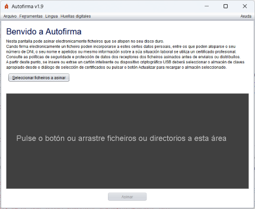
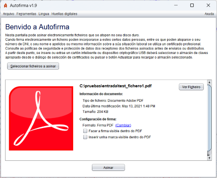
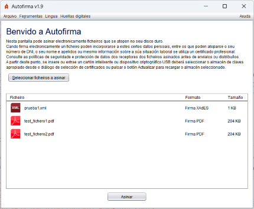
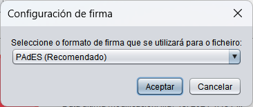

Desde esta pantalla pode selecionar os documentos ou directorios que desexa asinar.

Pode seleccionar un ou varios documentos pulsando o botón "Seleccionar ficheiros a asinar" ou arrástrando os documentos e/ou directorios á área indicada (o recuadro de cor gris escuro).
Ao cargar os documentos a asinar, mostraránselle certos detalles sobre estes, que variarán segundo selecciónese un único ficheiro ou varios:
 
No recuadro habilitado para arrastrar os documentos que desexaban asinar apareceulle a información do ficheiro ou ficheiros que seleccionase.
Se só seleccionou un ficheiro e dispón dunha aplicación predeterminada para este tipo de documentos, apareceralle o botón "Ver ficheiro" co que poderá abrir. Ademais, apareceralle a información relativa ao ficheiro e á firma que se vai a xerar (formato, atributos de firma e opcións de firma). No caso de configurar datos para o formato de firma seleccionado que se vaia a incluír na propia firma, como a política de firma, mostrarase unha ligazón "Ver todos..." desde a que se poderán visualizar todos os atributos de sinatura definidos.
Se se seleccionaron varios ficheiros ou directorios, pode facer dobre clic sobre eles para abrilos ou pulsar co botón secundario do rato para ver as opcións de "Ver ficheiro" e "Ver os atributos de firma".
O botón "Asinar" situado no lado inferior da pantalla permitiralle asinar o documento. Se o almacén de certificados do seu sistema operativo aínda non terminase de cargarse, o botón aparecerá deshabilitado e cunha imaxe animada de espera. Nese caso, por favor, espere a que esta desapareza e habilítese o botón.
Unha vez pulsado o botón, o programa xerará unha firma para cada documento seleccionado. Para cada tipo de documento xerarase a firma co formato establecido a desde o panel de preferencias.
No caso de que se desexe asinar noutro formato distinto o ficheiro xa seleccionado, permitirase modificar seleccionando a ligazón "(Cambiar)" que se atopa xunto á información sobre o formato. Ao seleccionar, abrirase a seguinte xanela onde se permite elixir o formato desexado:

Os tipos de documento que se distinguen e os formatos de firma que admiten móstranse na seguinte táboa:
| Tipo de documento | Icona | Formatos de firma (resaltado o por defecto) |
|---|---|---|
| PAdES, CAdES e XAdES. | ||
| XML | XAdES e CAdES. | |
| Factura electrónica | Facturae, CAdES e XAdES. | |
| OOXML | CAdES, XAdES e OOXML (Office Open XML). | |
| ODF | CAdES, XAdES e ODF (Open Document Format). | |
| Resto de documentos | CAdES e XAdES. | |
| Firma electrónica | O mesmo da firma orixinal. |
Como excepción a este último caso, non se pode volver asinar unha factura electrónica xa asinada en formato Factura-e.
Ao asinar ficheiros, mostrarase unha xanela para o gardado da firma xerada se só se seleccionou un documento ou un diálogo para seleccionar o directorio de saída se se seleccionaron varios. Tras gardar as firmas, mostrarase a pantalla de detalle de firma.
O proceso de firma pode verse alterado polos plugins instalados en Autofirma. Consulte o apartado de xestión de plugins para saber máis sobre eles.
De forma complementaria aos botóns e elementos gráficos, pode usar tamén a barra de menú ou os seguintes aceleradores de teclado:
Control (⌘ en macOS) + S : Seleccionar ficheiro.Control (⌘ en macOS) + F : Asinar o ficheiro seleccionado.Pode configurar o formato de firma a utilizar por cada tipo de ficheiro e as particularidades destes formatos, así como o comportamento xeral da aplicación, a partir do panel de preferencias dispoñible a través do menú Opcións.
Algúns formatos ou opcións de firma poden facer aparecer opcións de configuración adicionais na propia xanela de firma:
A firma PDF dun único documento permite configurar o que a firma se mostre no documento. Para iso será necesario marcar a casa "Facer a firma visible dentro do PDF".
Tamén é posible inserir unha marca visible no PDF ao tempo de realizar a firma. Esta opción modificará o PDF agregándolle a imaxe seleccionada e, seguidamente, asinarao. Para usar esta función será necesario marcar a casa "Inserir marca visible no PDF". Esta casa estará deshabilitada se o documento PDF xa está asinado, xa que a inserción dunha marca invalidaría as firmas anteriores.
Outra opción dispoñible sería a de xerar un PDF certificado, será posible se a firma a realizar é formato PAdES e o documento non está previamente asinado. Realízase ao marcar a casa "Xerar PDF certificado", e aplícase ao documento o nivel de certificación seleccionado na lista de opcións baixo a esta casa. A listaxe de opcións estará deshabilitado se a casa "Xerar PDF certificado" non está habilitada.
Estas opciónes aparecerán marcadas ou non por defecto segundo estableceuse no panel de preferencias. Ao seleccionar calquera destas casas, mostrarásenos o panel de Propiedades de elementos visibles en PDF.
Ao agregar unha nova firma binaria ou XML a un documento de firma, permítese configurar se a nova firma realizarase sobre o propio documento (cofirma) ou sobre as firmas xa introducidas (contrafirma). Esta opción pode configurarse desde o panel de preferencias dos formatos CAdES e XAdES. Cando aplique, Autofirma mostrará ao usuario un botón "Opcións Avanzadas" desde o que poder acceder directamente a estas opcións de configuración.
Nos procesos de sinatura de múltiples documentos se omite calquera configuración que obrigue a deter o proceso de firma. Así, por exemplo, se omitirá a solicitude de contrasinal dos PDF e a configuración de firma visible e marca visible pedirase unha única vez e aplicarase a todos os documentos coa mesma configuración.